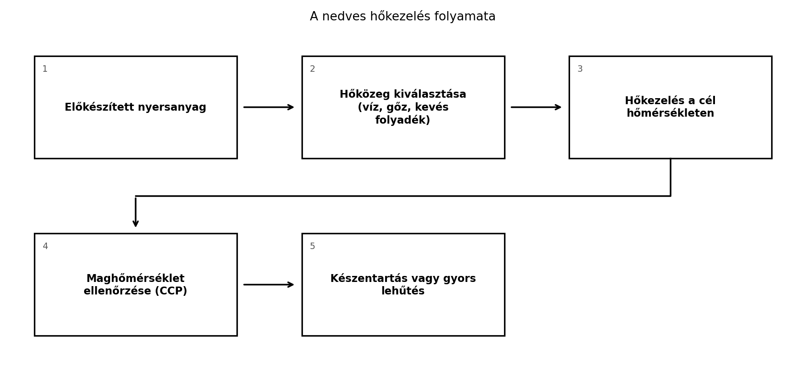

A konyhán ugyanabból a zöldségből, húsból vagy halból egészen más eredményt kapsz attól függően, hogyan viszed be a hőt. Ha csirkemellet forrásban lévő vízbe dobsz, a felülete gyorsan megfeszül, a belseje viszont könnyen száraz marad vagy épp egyenetlenül fő át. Ha ugyanazt a csirkemellet 80 °C körüli, alig rezdülő folyadékban készíted el, szaftosabb, egyenletesebb lesz. A nedves hőkezelések – főzés, gőzölés, buggyantás, párolás – a leggyakrabban használt konyhatechnológiák közé tartoznak. A szakácsnak pontosan kell tudnia, mikor melyiket válassza, milyen hőfokon dolgozzon, és hol ellenőrizze a biztonságos maghőmérsékletet.
Képzeld el, hogy 500 g száraztésztát főzöl. A tészta vizet szív fel, tömege a főzés után körülbelül 1 200 g. Ez 140 %-os tömegnövekedés. Ugyanakkor 1 000 g friss zöldbab főzés után csak 880 g, mert a hőkezelés során vizet és oldott anyagokat veszít. Már ez a két példa is mutatja: a nedves hőkezelés egyszerre alakítja az állagot, az ízt, a tömeget és a tápanyagtartalmat. A technológia kiválasztása ezért nem csak az étel minőségét, hanem a kalkulációt, az adagszámot és az élelmiszer-biztonságot is meghatározza.
A nedves hőkezelések közös jellemzője, hogy a hőt víz, gőz, vagy víz és zsiradék keveréke közvetíti. A hőmérséklet általában 70–100 °C között mozog, bár nyomás alatti gőzölésnél ennél magasabb is lehet (ellenőrizendő: pontos nyomásfüggő hőmérséklet). A száraz hőkezelésekkel szemben itt a felület nem szárad ki, a hő egyenletesebben hatol be, és hosszabb idő alatt oldja fel a keményebb rostokat.
Definíció. Főzés: nyersanyag hőkezelése bő, 100 °C körüli folyadékban, általában vízben, alaplében vagy tejben. A főzés célja lehet teljes puhítás, ízkivonás, csíraölés vagy előfőzés.
Definíció. Gőzölés: nyersanyag hőkezelése forró gőzben, közvetlen folyadékkal való érintkezés nélkül. A gőz hőmérséklete normál nyomáson körülbelül 100 °C, de a gőz sokkal több hőt ad át, mint az azonos hőmérsékletű víz.
Definíció. Buggyantás (pochírozás, pocher): nyersanyag kíméletes hőkezelése 75–85 °C közötti folyadékban, amelynek felszíne alig rezdül (»remeg«), buborék nem száll fel. A cél a fehérje finom megalvasztása anélkül, hogy a folyadék forrna.
Definíció. Párolás (braiser): nyersanyag hőkezelése kevés folyadékban, fedő alatt, zsiradék és folyadék jelenlétében, általában 85–95 °C közötti hőmérsékleten. A párolás során a gőz és a folyadék egyszerre dolgozik.
Definíció. Dinsztelés (étuver): zöldségek vagy húsok előkészítő hőkezelése kevés zsiradékon, fedő alatt, alacsony lángon, saját nedvességükben. A dinsztelés feltárja az ízeket, puhítja a rostokat, de még nem ad kész ételt.
Az alábbi táblázat összefoglalja a nedves hőkezelések főbb jellemzőit:
| Módszer | Hőközeg | Tipikus hőmérséklet (°C) | Jellemző alapanyag | Elsődleges cél |
|---|---|---|---|---|
| Főzés | bő folyadék | 95–100 | tészta, burgonya, rizs, hüvelyesek, alaplé | teljes puhítás, ízkivonás |
| Gőzölés | gőz | 100 (nyomás nélkül) | zöldség, hal, tészta, kíméletes ételek | tápanyagmegőrzés, formamegtartás |
| Buggyantás | folyadék | 75–85 | tojás, hal, csirkemell, gyümölcs | kíméletes fehérjedenaturálás |
| Párolás | kevés folyadék + gőz + zsiradék | 85–95 | húsok, zöldségek, halak | szaftos, omlós állag |
A hőmérsékleti értékek tanulási értékek. Az üzemi gyakorlatban a saját HACCP-terv és a gyártói utasítás a mérvadó; a pontos értékek időben és eszközönként változhatnak (ellenőrizendő: NÉBIH-útmutató / HACCP-terv).
A skálán egymás mellett látod a táblázat tartományait és a sávok mellett azt a jelet, amelyről szemmel felismered őket (remegő víz, apró buborékok, erős forrás). Felül az előző alfejezet átalakulási küszöbei állnak: a tojásfehérje, a sárgája és a keményítő már a buggyantás tartománya alatt átalakul, ezért kíméletes hőkezeléssel is megalvad, besűrűsödik. A szaggatott 75 °C-os vonal nem a víz, hanem az étel belsejének tanulási határa (ellenőrizendő: HACCP-terv): a víz hőmérséklete és a maghőmérséklet két külön mérés. A HTML-kiadásban a csúszkával választott hőmérsékletnél kiemelődik, melyik eljárás tartományában vagy.

Az ábrán az látszik, hogy a nedves hőkezelés mindig ugyanazt a logikai sort követi: előkészítés, a hőközeg kiválasztása, a hőkezelés, a biztonságos maghőmérséklet ellenőrzése, majd a szabályos készentartás vagy gyors visszahűtés. A hőkezelés lépése kritikus pont (CCP) lehet.
A nedves hőkezeléseknél a hőmérséklet és az idő együttesen pusztítja a káros mikrobákat. A maghőmérsékletet mindig a legvastagabb részben, csont és edényfal érintése nélkül mérd. A maghőmérőt használat előtt és után fertőtlenítsd.
Kritikus pont. A húsok, baromfihús, halak és tojásételek nedves hőkezelésénél a maghőmérséklet elérése CCP lehet. Például baromfihúsnál legalább 75 °C maghőmérsékletet szoktak előírni; darált húsnál is legalább 75 °C-ot írunk elő (tanulási érték, ellenőrizendő: HACCP-terv). A hal kíméletesebb hőkezelést kaphat, de a sérülékeny csoportoknál (várandós, kisgyermek, idős, legyengült immunrendszerű) a biztonságos oldalt kell választani (ellenőrizendő: aktuális maghőmérséklet-határérték és idő).
Higiénia. A főzővizet, az alaplevet és a párolófolyadékot is keresztszennyeződés nélkül kezeld. A nyers húsból származó szennyezett edényt, vágódeszkát és a nyers hús levét soha ne érintkeztesd a már hőkezelt étellel. A fedőt, a gőzölőbetétet és a habmerőt tiszta eszközzel használd.
Allergén. A nedves hőkezelés önmagában nem távolítja el az allergéneket. Ha a főző- vagy párolófolyadék alaplevet, tejet, vajat, bort vagy fűszerkeveréket tartalmaz, az allergén (pl. tej, zeller, mustár, szulfit) a kész ételben is jelen lesz. A gluténtartalmú tészta főzővize sem válik allergénmentessé attól, hogy kifőzted; gluténmentes tésztát külön vízben, tiszta edényben főzz.
A főzés leggyakrabban vízben vagy alaplében történik. Az indítás módja kétféle lehet.
Szabály. Hideg vízben indítjuk azokat a nyersanyagokat, amelyekből ízt akarunk kioldani, vagy amelyeket egyenletesen, felületi törés nélkül akarunk megpuhítani. Jellemző példa: csont, hús alapléhez, száraz hüvelyesek, burgonya, cékla. Ekkor a hő lassan hatol be, a sejtfalak fokozatosan puhulnak, a felület nem reped meg.
Szabály. Forró vízben indítjuk azokat a nyersanyagokat, amelyeknél a gyors felületi fehérjekicsapódás vagy a keményítő gyors csirizesedése fontos. Jellemző példa: húsok, halak, tészta, friss zöldségek, tojás. A forró indítás segít megőrizni a formát, csökkenti az oldott anyagok kioldódását, és megakadályozza, hogy a tészta összeragadjon.
Gyöngyöző forralás a 95–98 °C közötti, kis buborékokkal járó, de nem heves forrás. Ez az érték tanulási adat (ellenőrizendő: eszköztől és légnyomástól függ). Gyöngyöző forralással készíted az alapleveket, a húsleveseket, a kíméletes főzést igénylő ételeket. A heves forrás szétfőzi a zöldséget, zavarossá teszi az alaplevet, és rontja az állagot.
Blansírozás rövid, forró vizes vagy gőzös előfőzés, amelyet azonnali lehűtés követ. A blansírozás célja lehet:
Eljárás. Zöldség blansírozása biztonságosan 1. Készíts elő tiszta edényt forrásban lévő, enyhén sós vízzel, és egy másik edényt hideg vízzel, lehetőleg jéggel. 2. A megtisztított, darabolt zöldséget tedd szűrőbetétbe vagy szűrőkanálba, hogy gyorsan kiemelhető legyen. 3. Merítsd a zöldséget a forrásban lévő vízbe. A blansírozási idő rövid, általában fél–három perc, a zöldség méretétől és fajtájától függ (ellenőrizendő: konkrét idő). 4. Figyeld a szín élénkülését és az állag enyhe puhulását. A zöldség ne főjön teljesen puhára. 5. Emeld ki a zöldséget, és azonnal merítsd a hideg vizes fürdőbe. Ez a sokkolás megállítja a továbbfőlést. 6. Csepegtesd le, majd használd fel azonnal, vagy hűtve tárold a HACCP-terv szerint.
A blansírozás utáni azonnali hűtés nem csak minőségi, hanem élelmiszer-biztonsági szempontból is fontos: a meleg, nedves zöldség a baktériumoknak kedvező közeget jelent.
A gőzölés kíméletesebb a főzésnél, mert a nyersanyag nem érintkezik közvetlenül a főzőfolyadékkal. A vízben oldódó vitaminok és ásványi anyagok kisebb része oldódik ki. A gőz egyenletesen járja át a felületet, így a zöldségek formája, színe és harapható állaga megmarad.
Gőzölés nyomás nélkül: a klasszikus gőzölőben, perforált betétben vagy gőzkosárban a nyersanyag a forrásban lévő víz fölé kerül. A gőz hőmérséklete normál nyomáson körülbelül 100 °C. Ez az eljárás alkalmas zöldségek, halak, tészták, gombócok kíméletes készítésére. A gőzölő edényt mindig fedd le, hogy a gőz ne szökjön el.
Biztonsági korlát. A gőzölő fedelét magadtól elfelé emeld, a gőzölőbetétet hőálló kesztyűben emeld ki. A kombi pároló ajtaját előbb résnyire nyisd (vagy használd az ajtóreteszelő funkciót), lépj hátra, és csak a gőz kiáramlása után nyúlj be, hőálló kesztyűben. Folyadékos edényt ne tegyél szemmagasság fölé.
Gőzölés nyomás alatt: a kukta vagy gyorsfőző zárt rendszerében a nyomás megnő, a víz forráspontja 100 °C fölé emelkedik, így a hőkezelés gyorsabb lesz. A kuktát csak a gyártói utasítás szerint töltsd fel, a nyomáscsökkentő szelepet soha ne takard el, és felnyitás előtt mindig csökkentsd a nyomást. A magasabb hőmérséklet (kb. 110–120 °C, ellenőrizendő: pontos nyomásfüggő érték) gyorsabban puhítja a kemény húsokat és hüvelyeseket.
Kombi pároló: a modern konyha sokoldalú berendezése. Gőz, hőlég és ezek kombinációja közül választhatsz. A kombi párolóban a páratartalom szabályozható, így a gőzölés, párolás, sütés és regenerálás egy gépben végezhető. A hőmérséklet és az idő digitálisan állítható, a maghőmérő-szonda pedig automatikusan leállíthatja a folyamatot a beállított belső hőmérsékletnél.
Higiénia. A gőzölő terét, a víztartályt és a lefolyót naponta tisztítsd a gyártói utasítás szerint. A pangó, meleg víz baktériumszaporodásra alkalmas. A gőzölőbetéteket használat után azonnal mosogasd el, és szárítva tárold.
A buggyantás a legkíméletesebb nedves hőkezelés. A folyadék 75–85 °C közötti, felszíne alig rezdül, buborék nem száll fel, és soha nem forr; a hőmérsékletet érdemes hőmérővel ellenőrizni. Ezen a hőmérsékleten a tojásfehérje, a halfehérje és a baromfihús fehérjéje finoman megalvad, anélkül hogy a felület kiszáradna vagy szétfőne.
Főbb buggyantott ételek: - buggyantott tojás, ahol a tojást héj nélkül, enyhén ecetes vízben készítik, - halfilé vagy halfej, - csirkemellfilé, - gyümölcsök, például körte boros fűszeres lében, - galuskák, quenelle-ek.
A buggyantófolyadék lehet víz, alaplé, tej, bor, vagy fűszeres lé. A folyadék ízét a nyersanyag átveszi, ezért a buggyantáshoz használt léből gyakran mártást készítenek.
Szabály. A buggyantásnál a folyadékot először felforralhatod, majd mérsékeld a hőt, amíg a felszín alig rezdül, és buborék nem száll fel. Ha a folyadék gyöngyözik vagy forr, a tojás szétfolyik, a hal szétesik, a hús rágós lesz.
A buggyantott tojásnál az ecet (kb. 1 evőkanál 1 liter vízhez) segíti a fehérje gyorsabb alvadását, de nem ad erős ecetízt. A vizet megkeverve enyhe örvényt hozol létre, és a tojást a közepébe csúsztatod, így szép, összetartó formát kapsz. A maghőmérsékletet a tojásnál nehéz mérni, ezért az időre és az állagra támaszkodj: a fehérje megalvadt, a sárgája még lágy (ellenőrizendő: pontos idő).
Az ábra öt lépése: (1) 75–85 °C-os, enyhén ecetes víz, amely nem forr; (2) örvény körkörös keveréssel; (3) a kis tálba feltört tojás az örvény közepébe; (4) kiemelés szűrőkanállal; (5) lecsepegtetés papírtörlőn, a szálas szél levágása. A hatodik kép a leggyakoribb hibát mutatja: lobogó vízben a fehérje szétfolyik. A lágy sárgájú tojás nem éri el a biztonságos maghőmérsékletet, ezért várandósnak, kisgyermeknek, idősnek és legyengült immunrendszerű vendégnek nem adható; számukra teljesen átsütött (kemény) tojást kínálunk (ellenőrizendő: HACCP-terv). A HTML-kiadásban a lépések lapozhatók.
Kritikus pont. A buggyantott baromfihúsnál a 75 °C maghőmérséklet elérése biztonsági követelmény lehet (ellenőrizendő: NÉBIH-útmutató). A buggyantófolyadékot ne használd fel nyersen mártáshoz, ha az nyers hússal érintkezett; előbb forrald fel.
A párolás az egyik legfontosabb konyhatechnológiai eljárás húsok, zöldségek és halak készítésére. A nyersanyagot kevés zsiradékban elősütöd vagy dinszteled, majd kevés folyadékban, fedő alatt, alacsony lángon készre párolod. A folyadék részben elpárolog, részben a gőztérben kering, így a nyersanyag szaftos, omlós lesz.
A párolás szakaszai: 1. Előkészítés: a húst darabold, sózhatod, fűszerezheted. A zöldségeket tisztítsd, darabold egyenletes méretre, hogy egyformán puhuljanak. 2. Zsiradékban való elősütés vagy dinsztelés: a hús felületét kevés forró zsiradékban pirítsd meg, hogy ízanyagok keletkezzenek. A zöldségeket, hagymát üvegesre dinszteld. 3. Folyadék hozzáadása: öntsd fel annyi alaplével, vízzel, borral vagy paradicsomlével, hogy a nyersanyag félig-harmadrészig ellepje. A folyadék mennyisége a későbbi mártás sűrűségét is meghatározza. 4. Fedő alatti párolás: szabályozd a hőt úgy, hogy a fedő alatt a folyadék enyhén gőzölögjön, egy-egy buborék jelenjen meg, de ne forrjon. A hőmérséklet körülbelül 85–95 °C (tanulási érték). Időnként ellenőrizd, szükség esetén pótold a folyadékot. 5. Készre párolás és maghőmérséklet ellenőrzése: a hús akkor kész, ha a kötőszövet feloldódott, a rostok omlósak, és a maghőmérséklet elérte az előírt értéket. 6. Befejezés: a párolólevet leszűrheted, mártássá sűrítheted, vagy a hússal együtt tálalhatod.
Dinsztelés a párolás előkészítő fázisa is lehet. A hagymát, zöldséget kevés zsiradékon, fedő alatt, alacsony lángon addig melegíted, amíg üveges, puha, de még nem barna lesz. A dinsztelés feltárja a cukrok édes ízét, csökkenti a nyers, csípős ízeket, és alapot ad a további fűszerezéshez.
Szabály. A párolásnál a fedő ne legyen teljesen légmentes, mert a gőznek távoznia kell; de a gőz nagy részét bent kell tartani. Ha a fedő alatt túl magas a hő, a folyadék gyorsan elfő, az étel leég. Ha túl alacsony, a nyersanyag nem puhul meg.
Allergén. A párolólé gyakori allergénforrásai: vaj, tejszín, tej, zeller, mustár, borban lévő szulfit, gluténtartalmú liszttel való sűrítés. A vendég tájékoztatásához pontosan ismerd a felhasznált alaplevet és fűszerkeveréket.
A nedves hőkezelés során a nyersanyag tömege változhat. A vízfelvétel tömegnövekedést, a vízvesztés tömegcsökkenést okoz. Ezt a későbbi anyaghányad-számításnál fogod használni.
Számítás. Tömegnövekedés tésztafőzésnél
Adott: 500 g száraztészta, főzés után 1 200 g. Keresett: a tömegnövekedés százalékban.
Képlet:
Behelyettesítés:
A tészta tömege 140 %-kal nőtt, azaz a főtt tészta tömege 2,4-szerese a száraztésztáénak. Ez a szorzószám hasznos, ha 10 adag főtt tésztához kell száraztésztát rendelni.
Számítás. Tömegcsökkenés zöldbab főzésénél
Adott: 1 000 g tisztított zöldbab, főzés után 880 g. Keresett: a veszteség százalékban.
Képlet:
Behelyettesítés:
A zöldbab főzési vesztesége 12 %. Ez azt jelenti, hogy ha 10 adag, egyenként 100 g kész zöldbabot kell tálalnod, akkor helyett tisztított nyers zöldbabot kell előkészíteni (ellenőrizendő: a pontos veszteség az üzemi receptúra szerint).
Ez a két összefüggés a Tömegszámítás, veszteség és tömegnövekedés alfejezetbe vezet tovább.
A nedves hőkezeléssel készült ételeket érzékszervi és mérhető szempontok szerint ellenőrizd.
1. Hiba: a buggyantott tojás szétfolyik a vízben. Ok: a víz túl forr, vagy a tojást nem megfelelően csúsztatták a vízbe. A heves forrás szétszakítja a fehérjét. Helyes gyakorlat: a vizet 80–85 °C-ra mérsékeld, enyhén ecetezd, és a tojást kis tálkából, az örvény közepébe engedd.
2. Hiba: a párolt hús száraz, rágós. Ok: túl magas hőfokon, kevés folyadékban, fedő nélkül párolták, vagy a párolási idő nem volt elég. Helyes gyakorlat: alacsony lángon, fedő alatt, elegendő folyadékkal párolj, és a maghőmérséklet mérésével ellenőrizd a készültséget.
3. Hiba: a zöldség főzés után szürkés, fakó. Ok: túl hosszú főzés, fedő nélküli vagy túl savas közeg, blansírozás elmaradása. Helyes gyakorlat: rövid főzési idő, gyöngyöző forralás, a zöldség azonnali lehűtése, ha nem azonnal tálalod.
4. Hiba: a gőzölőben a hal szétesik, a zöldség túlpuhul. Ok: a gőzölőben a hőmérsékletet nem csökkentették időben, vagy a nyersanyagot túl hosszan gőzölték. Helyes gyakorlat: a gőzölési időt pontosan mérd, és a kész ételt azonnal emeld ki a gőztérből.
Egy konyhán a tanuló szakács bordát párolt. A húst kevés olajban erős lángon megpirította, majd hideg vízzel felöntötte, és fedő nélkül, nagy lángon főzte. A víz gyorsan elfőtt, a hús kívül kérges, belül kemény maradt, a lé zavaros, zsíros lett. Az oktató leállította a munkát. A tanuló újra kezdte: a húst mérsékelt lángon, kevés zsiradékban elősütötte, a hagymát üvegesre dinsztelte, majd forró alaplével öntötte fel, fedő alatt, alig gyöngyöző (85–95 °C-os) folyadékban párolta. Negyven perc múlva a maghőmérséklet 78 °C lett, a hús omlós, a lé szaftos. A tanulság: a párolás nem erős forralás, és a folyadék hőfokát, mennyiségét, a fedő használatát egyszerre kell kézben tartani.
1. feladat (A). Sorold fel a négy fő nedves hőkezelési módot, és írd mindegyik mellé a tipikus hőmérséklet-tartományt °C-ban!
2. feladat (A). Egy csirkemellet 85 °C-os folyadékban készítesz. Melyik eljárást használod: buggyantás vagy főzés? Indokold!
3. feladat (B). Állítsd sorrendbe a párolás lépéseit: fedő alatti párolás, folyadék hozzáadása, elősütés/dinsztelés, maghőmérséklet ellenőrzése, előkészítés, befejezés.
4. feladat (B). Számítsd ki a tömegváltozást! 300 g száraz rizsből 750 g főtt rizs lesz. Mennyi a tömegnövekedés százalékban?
5. feladat (C). 10 adag, adagonként 120 g párolt csirkemellet kell készítened. A nyers csirkemell párolási vesztesége 20 %. Hány gramm nyers csirkemellet kell előkészítened?
6. feladat (D). Egy vendég gluténmentes tésztát kér. A konyhán ugyanabban a tésztaszűrőben készül a hagyományos búzalisztes tészta is. Írd le, mi a keresztszennyeződés veszélye, és hogyan szerveznéd meg a gluténmentes tészta biztonságos főzését!
Önellenőrzés – válaszok
Feladatok megoldásai
1. feladat (A). - Főzés: 95–100 °C. - Gőzölés: 100 °C nyomás nélkül, nyomás alatt magasabb (ellenőrizendő). - Buggyantás: 75–85 °C. - Párolás: 85–95 °C.
A hőmérsékletek tanulási értékek.
2. feladat (A). Buggyantást használsz, mert a folyadék 85 °C-os, és a buggyantás 75–85 °C között, kíméletes, buborékmentes hőkezelést jelent. A főzés ennél magasabb hőmérsékletet, 95–100 °C-ot igényel.
3. feladat (B). Helyes sorrend: 1. előkészítés, 2. elősütés/dinsztelés, 3. folyadék hozzáadása, 4. fedő alatti párolás, 5. maghőmérséklet ellenőrzése, 6. befejezés.
4. feladat (B). Adott: , . Keresett: .
A rizs tömege 150 %-kal nőtt.
5. feladat (C). Szükséges kész mennyiség: . A veszteség 20 %, tehát a kész tömeg a nyers tömeg 80 %-a. Legyen a keresett nyers tömeg .
Tehát 1,5 kg nyers csirkemellet kell előkészíteni.
6. feladat (D). A keresztszennyeződés veszélye: a búzalisztes tészta főzővizében, a szűrőn és az edényeken gluténmaradvány maradhat, amely a gluténmentes tésztába kerülve allergiás reakciót válthat ki. A biztonságos eljárás: - Külön, alaposan mosott edényben és külön szűrőben főzd a gluténmentes tésztát. - Használj külön merőkanalat, csipeszt és tiszta kesztyűt. - A főzővizet ne oszd meg a hagyományos tészta vizével. - A gluténmentes tésztát letakarva, jelölve tárold, és a tálalásnál jelezd a vendégnek, hogy a konyha elkülönített eljárást alkalmazott, de a keresztszennyeződés kockázatát teljesen kizárni nem lehet.
A nedves hőkezelések a hőt víz, gőz vagy víz–zsiradék keverékével közvetítik. A főzés bő folyadékban, 95–100 °C-on történik; hideg indítást ízkivonásra, forró indítást a forma megőrzésére és a keményítő gyors csirizesítésére használunk. A gyöngyöző forralás 95–98 °C körüli, kíméletes. A blansírozás rövid előfőzés azonnali lehűtéssel. A gőzölés 100 °C-os gőzzel, nyomás nélkül vagy nyomás alatt, illetve kombi párolóban történik. A buggyantás 75–85 °C-os, alig rezdülő, buborékmentes (nem gyöngyöző) folyadékban kíméletesen alvasztja a fehérjét. A párolás kevés folyadékban, fedő alatt, 85–95 °C-on készíti omlósra a húsokat és zöldségeket; a dinsztelés zsiradékon, saját lében történő előkészítő hőkezelés. Minden nedves hőkezelésnél kritikus pont lehet a maghőmérséklet elérése, a készentartás és a gyors visszahűtés. A hőkezelés nem távolítja el az allergéneket. A tömegváltozás számítása: , veszteségnél . Ezt használjuk a Száraz hőkezelések: sütés, pirítás, grillezés és a Zöldségköretek alfejezetekben.
Ellenőrizendő pontok: a főzés, gőzölés, buggyantás, párolás pontos hőmérsékleti tartományai; a baromfihús és darált hús minimális maghőmérséklete; a nyomás alatti gőzölés hőmérséklete; a blansírozási idő; a visszahűtés és melegen tartás idő- és hőmérsékleti határai; a tömegváltozási példák pontos üzemi értékei.